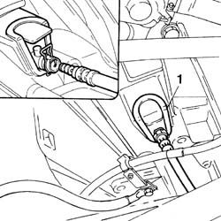
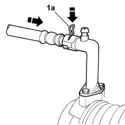
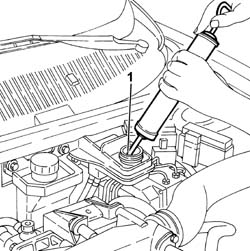
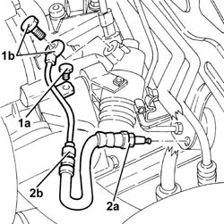
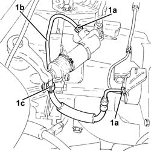
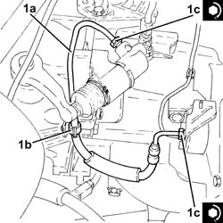
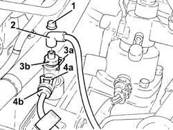
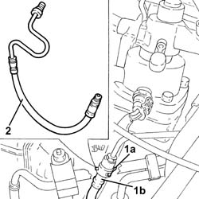

1820B54 hose from damper - r r
- Path
- Procedures > 18 CLUTCH > 1820 CLUTCH RELEASE CONTROLS > 1820B HYDRAULIC CLUTCH SYSTEM > 1820B54 hose from damper - r r
- Kind
- repair procedure (removal / refitting; the operation number is the code)
- Applies to
- engines: 1.6 TS , 1.8 TS, 2.5 V6, 1.9 JTD 8v , 1.9 JTD 16v, 2.4 JTD 10v, 2.4 JTD 20v; all production periods
- Interactive page
- https://sloeber94.github.io/elrnDB-a156/en/#/3237905
Applies to: engines: 1.6 TS , 1.8 TS; all production periods
 Removing
Removing
 Refitting
RefittingDisconnect the battery negative terminal.
 | Name | Connector |
|---|---|---|
- | Battery |
5530B52 Battery DRIP TRAY/SUPPORT - R.R.
Drain the brake-clutch fluid from the reservoir using a suitable syringe.
Undo the connector from the vibration damper for the pipe connected to the operating cylinder.
1. Completely release the flexible retaining fork from the actuator casing then extract the pipe from its housing. Then remove the pipe from the vibration damper to the operating cylinder from the engine compartment.

Applies to: engines: 1.6 TS , 1.8 TS; all production periods
Refitting
RemovingPlace the pipe in the engine compartment.
1. Position the flexible fork (1a) as illustrated in the diagram (in other words, not fully introduced).
2. Introduce the pipe fully in the actuator.
3. Push the fork fully home to lock the pipe in place.

Applies to: engines: 1.6 TS , 1.8 TS; all production periods
Tighten the connector for the pipe on the vibration damper to torque.
 | Fastening | Component | Ø | Value (daNm) |
|---|---|---|---|---|
- | Connector | HOSE FROM VIBRATION DAMPER | M12 | Vibration damper side: 1.7 - 1.9 |
1820B08 Clutch release HYDRAULIC SYSTEM - Bleeding air and restoring level
5530B52 Battery DRIP TRAY/SUPPORT - R.R.
Connect the battery negative terminal.
| Name | Connector |
|---|---|---|
- | Battery |
Applies to: engines: 2.5 V6, 1.9 JTD 8v , 2.4 JTD 10v; all production periods
Removing
Refitting5530B52 Battery DRIP TRAY/SUPPORT - R.R.
1. Drain the brake-clutch fluid from the reservoir using a suitable syringe.

Applies to: engines: 2.5 V6, 1.9 JTD 8v , 2.4 JTD 10v; all production periods
1. Undo bolt (1a) and disconnect the connection between supply pipe (1b) and master cylinder.
2. Undo vibration damper connector (2a) and remove the supply hose to the master cylinder (2b).

Applies to: engines: 2.5 V6, 1.9 JTD 8v , 2.4 JTD 10v; all production periods
Refitting
RemovingFit the supply hose to the master cylinder and tighten the connector to the vibration damper to torque.
| Fastening | Component | Ø | Value (daNm) |
|---|---|---|---|---|
- | Connector | HOSE FROM VIBRATION DAMPER | M12 | Vibration damper side: 1.7 - 1.9 |
Tighten the connector for the supply hose to the master cylinder, master cylinder side, to torque.
| Fastening | Component | Ø | Value (daNm) |
|---|---|---|---|---|
- | Connector | HOSE FROM VIBRATION DAMPER | M12 | Operating cylinder side: 1.7 - 1.9 |
Tighten the bolts securing the supply hose to the master cylinder.
1820B08 Clutch release HYDRAULIC SYSTEM - Bleeding air and restoring level
Applies to: engines: 1.9 JTD 16v; all production periods
Removing
RefittingProceed with removal 1016A10 sound-proofing cover - r + r
Proceed with removal 5530B10 battery - r+r
Proceed with removal 5530B52 Battery DRIP TRAY/SUPPORT - R.R.
Remove the protective cap on the master cylinder bleed valve.
Connect the collection system (pipe and reservoir) to the bleed valve on the clutch operating cylinder.
Operate the clutch pedal until the brake-clutch fluid reservoir is empty.
1. Undo the connectors (1a) and remove the pipe from the vibration damper to the operating cylinder (1b), after releasing it from the band (1c).

Applies to: engines: 1.9 JTD 16v; all production periods
Refitting
Removing1. Place the pipe from the vibration damper to the operating cylinder (1a) back in its seating, secure it with the band (1b) and tighten the connectors (1c) to the specified torque.
| Fastening | Component | Ø | Value (daNm) |
|---|---|---|---|---|
1c | Connector | HOSE FROM VIBRATION DAMPER | M12 | (Operating cylinder side) 1.4 ÷ 2.2 |
| Fastening | Component | Ø | Value (daNm) |
|---|---|---|---|---|
1c | Connector | RIGID INLET PIPE TO VIBRATION DAMPER | M12 | (Vibration damper side) 1.4 ÷ 2.2 |

Applies to: engines: 1.9 JTD 16v; all production periods
Bleed the air and top up the level in the hydraulic clutch system 0010T67 hydraulic clutch system bleed air .
Top up the brake-clutch fluid level 0010T65 hydraulic brake system bleed air .
Proceed with refitting 5530B52 Battery DRIP TRAY/SUPPORT - R.R.
Proceed with refitting 5530B10 battery - r+r
Proceed with refitting 1016A10 sound-proofing cover - r + r
Applies to: engines: 2.4 JTD 20v; all production periods
Removing
RefittingPosition the vehicle on the ramp
Proceed with removal 1016A10 sound-proofing cover - r + r
Proceed with removal 5530B10 battery - r+r
Proceed with removal - 5530B54 battery cover - r+r
Proceed with removal 7055B54 under-engine guard - r r
1. Remove the cap on the bleed valve.
2. Connect the collection system (pipe and reservoir) to the bleed valve on the hydraulic clutch actuator.
3. Lift the retaining clip (3a) and withdraw the bleed device (3b) as much as necessary.
Let the hydraulic clutch system drain completely.
4. Raise retaining clip (4a) and disconnect the hose from the vibration damper to the slave cylinder (4b), clutch hydraulic actuator side.

Applies to: engines: 2.4 JTD 20v; all production periods
1. Remove the retaining clip (1a) and disconnect the pipe between the vibration damper and the slave (1b), vibration damper side.
2. Remove the flexible pipe from the vibration damper to the slave cylinder after having released it from its fastenings.

Applies to: engines: 2.4 JTD 20v; all production periods
Refitting
RemovingPlace the flexible pipe from the vibration damper to the slave cylinder back in its housing and secure it.
Connect the flexible pipe from the vibration damper to the slave cylinder, vibration damper side and secure it using the retaining clip.
Connect the flexible pipe from vibration damper to slave cylinder, clutch hydraulic actuator side and secure with the retaining clip.
Proceed with refitting - 0010T64 brake and or clutch fluid check level and top up as necessary
Proceed with refitting 0010T67 hydraulic clutch system bleed air
Proceed with refitting 7055B54 under-engine guard - r r
Proceed with refitting - 5530B54 battery cover - r+r
Proceed with refitting 5530B10 battery - r+r
Proceed with refitting 1016A10 sound-proofing cover - r + r
Remove the car from the ramps.
Topics linked from this page (8)
- 0010T65 hydraulic brake system bleed air
- 0010T67 hydraulic clutch system bleed air
- 1016A10 sound-proofing cover - r + r
- 1820B08 Clutch release HYDRAULIC SYSTEM - Bleeding air and restoring level
- 5530B10 battery - r+r
- 5530B52 Battery DRIP TRAY/SUPPORT - R.R.
- 7055B54 under-engine guard - r r
- A1B Battery ( BATTERY NEGATIVE )